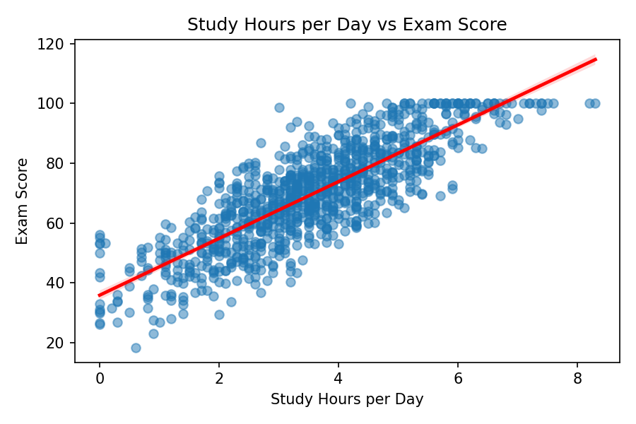
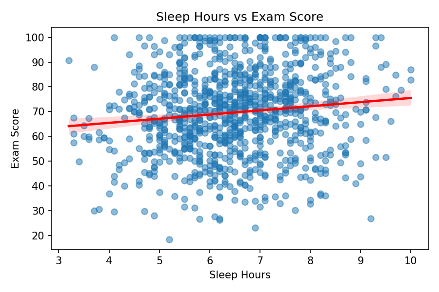
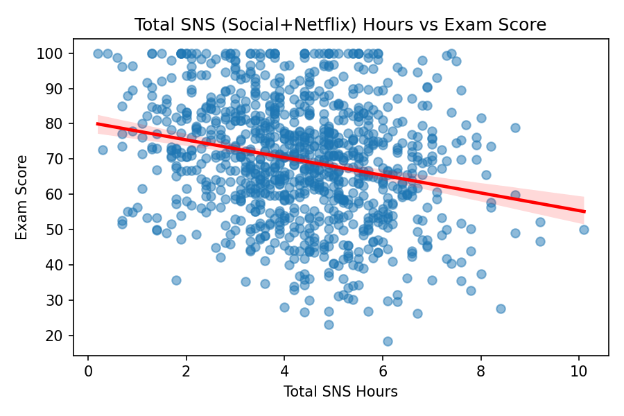

Student Lifestyle & Academic Performance Analysis
데이터 기반 EDA 분석
study_hours_per_day)sleep_hours)social_media_hours)netflix_hours)exam_score)기타 변수: 나이, 성별, 출석률, 식습관, 운동빈도, 정신건강 등

상관계수: r = 0.825
공부시간과 시험점수 간 강한 양의 상관관계
→ 공부시간 증가가 성적 향상과 밀접한 관련

상관계수: r = 0.122
수면시간과 성적 간 약한 양의 상관관계
→ 적절한 수면도 성적에 긍정적 영향

SNS 총 사용량 vs 성적
상관계수: r = -0.167 (약한 음의 상관)
세부:
→ 과도한 디지털 미디어 사용은 성적 저하 경향
| 변수 | 상관계수 (r) | 해석 |
|---|---|---|
| 공부시간 | +0.825 | 강한 양의 상관 |
| 수면시간 | +0.122 | 약한 양의 상관 |
| SNS 사용량 | -0.167 | 약한 음의 상관 |
| 넷플릭스 | -0.172 | 약한 음의 상관 |
| SNS 총합 | -0.167 | 약한 음의 상관 |
💡 주요 인사이트: 공부시간이 학업성과에 가장 큰 영향을 미침
- 끝 -